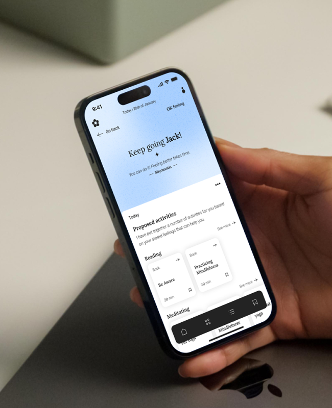
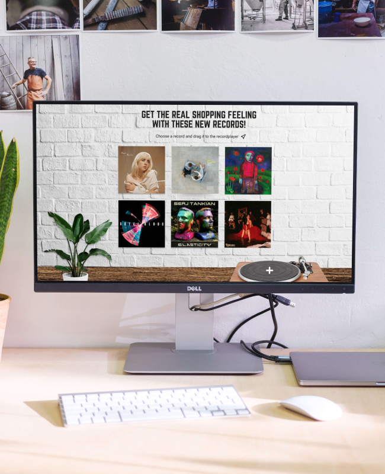

Mijn UI/UX projecten




Ik ben een UI/UX-ontwerper met een diploma in Communicatie en Multimedia Design. Gedurende mijn studie heb ik me gericht op principes van gebruikersgericht ontwerp en hands-on ervaring opgedaan in verschillende aspecten van het ontwerpproces.
Ik heb succesvol bureau-, veld- en gebruikersonderzoek uitgevoerd en inzichten vertaald naar innovatieve ontwerpprojecten. Of ik nu individueel werk of in teams, ik heb gedetailleerde prototypes geleverd die zowel aan de behoeften van de gebruikers als aan de doelen van de klant voldoen. Met vaardigheid in Figma, Adobe XD, InVision en Sketch creëer ik interactieve prototypes om gebruikersstromen effectief te visualiseren. Ik beheers ook samenwerkingstools zoals Miro voor groepsbrainstormsessies en het organiseren van gegevens.
Ik kijk ernaar uit om mijn vaardigheden toe te passen en bij te dragen aan het ontwerpen van digitale oplossingen die gebruikerstevredenheid vooropstellen en de kloof tussen technologie en menselijke interactie overbruggen.
Copyright Kayleigh van Peperstraten 2023